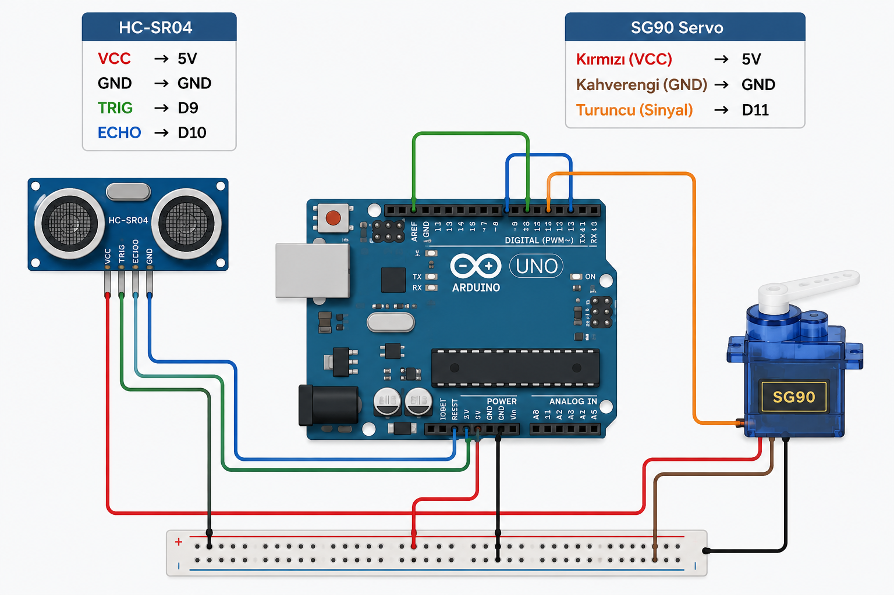

Galeri

HC-SR04 ultrasonik sensör ve SG90 servo motor kullanılarak geliştirilen gerçek zamanlı radar sistemi.

#include <Servo.h>
const int trigPin = 10;
const int echoPin = 11;
const int servoPin = 12;
long duration;
int distance;
Servo myServo;
void setup() {
pinMode(trigPin, OUTPUT);
pinMode(echoPin, INPUT);
Serial.begin(9600);
myServo.attach(servoPin);
}
void loop() {
for (int i = 15; i <= 165; i++) {
myServo.write(i);
delay(30);
distance = calculateDistance();
Serial.print(i); Serial.print(","); Serial.print(distance); Serial.print(".");
}
for (int i = 165; i > 15; i--) {
myServo.write(i);
delay(30);
distance = calculateDistance();
Serial.print(i); Serial.print(","); Serial.print(distance); Serial.print(".");
}
}
int calculateDistance() {
digitalWrite(trigPin, LOW);
delayMicroseconds(2);
digitalWrite(trigPin, HIGH);
delayMicroseconds(10);
digitalWrite(trigPin, LOW);
duration = pulseIn(echoPin, HIGH);
return duration * 0.034 / 2;
}/* Processing kodun buraya gelecek */